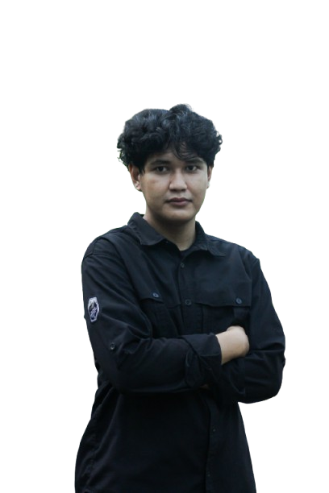

Bukti Proyek Penelitian
Gambar berikut menampilkan contoh visual dari analisis data seismik menggunakan metode SPAC yang telah saya lakukan:

Gambar 1: Visualisasi data pengolahan metode SPAC.
Aspiring Geoscientist | Geophysical Surveyor | Subsurface Modelling & Disaster Mitigation
A Geophysics fresh graduate with a high dedication to subsurface exploration and mitigation risk analysis. Possesses technical expertise in operating several geophysical instruments such as Microtremor, Ground Penetrating Radar (GPR), and Seismic, and is experienced in performing subsurface data interpretation for various campus projects. In addition to geophysical instrument expertise, possesses extensive field experience as a mapping method field assistant, responsible for spatial data acquisition from Total Station and Drone operation for area mapping. Other experiences are further strengthened through involvement at BMKG, focusing on seismic data interpretation, earthquake waveform analysis, and data processing to understand tectonic characteristics and disaster mitigation. Currently actively seeking professional opportunities in the energy and disaster mitigation industries that challenge skills for broader experience.

Dalam melakukan pengolahan data geofisika, saya secara rutin menggunakan pendekatan komputasional. Berikut adalah beberapa metode dan perangkat lunak yang saya kuasai:
Gambar berikut menampilkan contoh visual dari analisis data seismik menggunakan metode SPAC yang telah saya lakukan:
Gambar 1: Visualisasi data pengolahan metode SPAC.
Untuk diskusi lebih lanjut, Anda dapat menghubungi saya melalui tautan berikut: